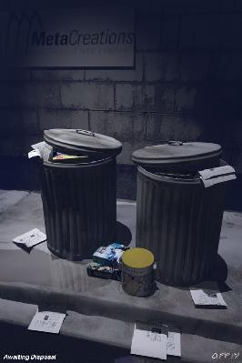

 | 1996년의 일이다. 종로구에서는 거리 곳곳에 비치되어 있던 공공 쓰레기통을 전면 철수 시켰다. 쓰레기통과 쓰레기통 주변에 넘쳐나는 쓰레기들을 없애기 위해서라고 했다. 그들의 생각은 단순했다. 쓰레기통 주위가 지저분하니까 쓰레기통이 없으면 해결된다. 이 얼마나... 어처구니 없는 짓거리 들인가.... |
[관련 기사 1] 새서울뉴스 2001년 1월
null
| |
쓰레기통 표준모델 개발 보급 시는 문화도시 서울의 이미지에 어울리고 선진도시 수준의 미와 기능을 두루 갖춘 쓰레기통의 표준모델을 개발 보급하기로 했다. 시는 문화도시 서울의 이미지에 어울리고 선진도시 수준의 미와 기능을 두루 갖춘 쓰레기통의 표준모델을 개발 보급하기로 했다.지난 95년 쓰레기 종량제 실시 이후 무단투기가 성행하고 예산과 인력을 줄인다는 이유로 자치구마다 쓰레기통 수를 크게 줄이는 바람에 거리 곳곳이 쓰레기로 넘쳐나고 있는 실정이다. 서울시내 가로 쓰레기통은 지난 94년 8,296개이던 것이 97년 5,613개, 지난해 9월말 현재 3,295개로 대폭 감소했다. 종로·동대문·송파구 등은 아예 ‘가로 휴지통 없는 시범거리제’를 운영하고 있다. 문제는 쓰레기통 이 없으면 쓰레기를 버리지 않을 것이라는 자치구의 생각은 기대에 그쳤을 뿐이고, 시민들은 쓰레기통이 없어 불편해 한다는 것이다. 시민단체인 주부환경봉사단의 조사에 따르면 시민 68%가 거리에 쓰레기통이 없어 불편을 느끼며, 시민 80%는 거리에 휴지통은 꼭 필요하다고 답했다. 이런 가운데 시가 이번에 가로형과 공원형 쓰레기통 모델을 선보였다. 가로형은 키와 돌다리 등 전통이미지를 모티브로 했고, 공원형은 분리수거를 유도하고 환경친화적인 폐석재를 사용한 점이 특징. >쓰레기통 설치는 자치구의 고유업무이므로, 시는 환경미화원과 시민 의견을 들어 개선점을 보완, 표준모델을 확정하는 대로 자치구에 보급해 적극 활용토록 권장할 방침이다. 문의:3707-9565 /권세황 기자 |
[관련 기사 2] 새서울뉴스 2001년 6월
♠ 가로휴지통을 많이 만들어 주세요
요즘 거리에서 휴지통 찾기가 어렵습니다. 휴지통이 부족하다보니 서울 거리에 쓰레기가 넘쳐 지저
분한데다 행인들은 아무데나 쓰레기를 내던져 걷기에 불편할 정도입니다. 휴지통을 많이 설치하여
깨끗한 도시환경을 만들어주시기 바랍니다.
<옥○○>
요즘 거리에서 휴지통 찾기가 어렵습니다. 휴지통이 부족하다보니 서울 거리에 쓰레기가 넘쳐 지저
분한데다 행인들은 아무데나 쓰레기를 내던져 걷기에 불편할 정도입니다. 휴지통을 많이 설치하여
깨끗한 도시환경을 만들어주시기 바랍니다.
<옥○○>
| 쓰레기 종량제 실시 이후 휴지통이 쓰레기 무단투기장으로 변해 화재의 위험이 있는 등 문제가 많아 각 자치구에서는 가로휴지통 설치를 억제해왔습니다. 그러나 한국방문의 해와 월드컵을 앞두고 가로환경에 대한 시정 모니터 및 시민여론수렴 결과 기초질서지키기 운동과 더불어 가로휴지통을 설치할 필요가 있는 것으로 나타나 현재 우리 시에서는 주변환경과 잘 어울리는 표준모델 휴지통을 개발, 제작해 각 자치구에 보급하고 있습니다. 오는 7월까지 시민들의 통행이 많은 지하철 입구나 버스정류장에 설치를 마칠 예정이며, 아울러 지속적인 환경순찰로 깨끗한 거리를 유지하는데 최선을 다하겠습니다. |
※ 쓰레기통이 없어지면 거리가 통째로 쓰레기통이 될꺼라는걸 정녕 몰랐단 말인가...